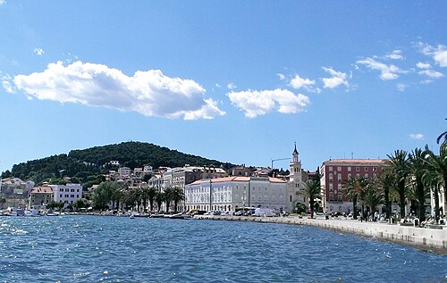
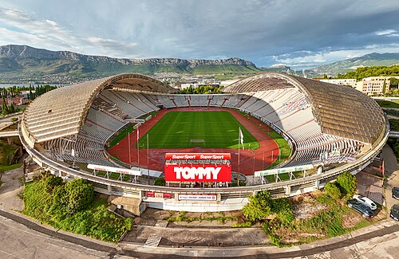

This map shows 18 of the most-searched sights in Split as photo spots, ranked by how often people search for them: Diocletian's Palace, Bačvice Beach, Marjan Hill, Riva Promenade and Poljud Stadium lead the list. Every spot has a pin on the subject and a phone icon showing where to stand, with tips for shooting it on your phone: which lens to use, how to frame it, a settings tip and the best time of day. Directions and Navigate buttons take you to the standing point on foot or by public transport. 3 spots are free to view; the full map is for members.
The 3 free photo spots
2Bačvice
Bačvice is Split's busy town beach, a sandy bay with the open Adriatic in front and the city behind. It photographs well because there is always something going on: swimmers, games in the shallows and people strolling along the edge of the bay. The best phone view is not from the sand itself. Hatzeov perivoj is the beach park on the road above, and its shaded benches look down over the beach, the bay and the activity below. That height lets you fit the curve of the shoreline and the water into one frame without crowds in the foreground. It is also a quieter elevated alternative to the crowded sand. If you want a different angle, the sandy bay itself shows the crescent of the beach with the Split waterfront and city behind. The rocky western end is called Pomoraca Park, and from there you get a lower view along the coast. That end involves some climbing and is not a formal lookout, so take care there. Be aware that building work around the bay can sometimes get into the view, so check your frame before you take the shot. Wipe your lens before you start, because sea air and sunscreen smear it quickly.
Where it is: Bačvice is the sandy bay beach on Split's coast, with the beach park of Hatzeov perivoj on the road above the sand.
Shooting it on your phone
Lens: Start with the ultra-wide (0.5x) to take in the whole curve of the bay, then switch to the default lens (1x) for a more natural look. Use telephoto (2x-5x, depending on your phone) to pick out swimmers or the far shoreline.
Where to stand: Stand in Hatzeov perivoj (the beach park on the road above the sand). A looking-down view over the beach, the bay and the activity on the sand from the shaded park above. From the high ground, and from the shaded benches of the park nearby, you look down over the beach, the bay and the activity on the sand, with the beach itself lying to the south-west.
Framing: Turn on the gridlines and put the waterline along the lower third, so the bay and sky fill the rest. Keep a tree branch or the park edge at one side for depth. If you want a different view, the sandy bay itself shows the crescent of the beach with the city behind.
Settings tip: Tap on the water or the sand to set focus, then drag the exposure slider down a little so the bright sea and sand do not wash out. Try a Live Photo to catch the movement of the waves and swimmers.
Best time: Earlier or later in the day usually gives softer light than at midday.
3Marjan

Marjan is the green hill at the western end of Split's peninsula. It is covered in dense Mediterranean pine forest and surrounded by the city and the sea, which is why it stands out so clearly from town. It is about 178 m high, and it is a favourite weekend excursion and recreation area for Split people, with walks, jogging trails and beaches. Its use as a park goes back a very long way: Diocletian's palace stood a short walk away, and the emperor laid out the nearer slopes as a park. Over the last century and a half the hill has become a symbol of Split.
The easiest way to photograph Marjan itself is from the city, not from the hill. From the western end of the Riva promenade you can see the wooded slopes rising behind the seafront, with the waterfront in the foreground. That gives the picture a sense of place: dark green hill, pale buildings, open water. Keep the hill as the main subject and use a bit of promenade or sea to anchor the frame. If you have the time, the old harbour-side Venecijanska kula makes a good foreground with the pine slopes behind it. Kašjuni Beach shows the quieter, cliffier southern side of the hill.
The Riva is a busy, open promenade, so take a few frames and step aside to check them rather than stopping in the walkway.
Where it is: Marjan is the wooded hill at the western end of Split's peninsula, west of the old centre and Diocletian's Palace. The suggested photo spot is at the western end of the Riva, the seafront promenade.
Shooting it on your phone
Lens: Start with the ultra-wide (0.5x) for the whole waterfront with the hill behind. Then switch to the default lens (1x) for a more natural view. Use the telephoto (2x-5x, depending on your phone) to bring the hill closer and fill the frame with the pine slopes.
Where to stand: Stand on Riva (western end, looking west toward the hill). Marjan's wooded slopes rising behind the seafront and the city's waterfront, photographed from the promenade. From here the picture shows Marjan's wooded slopes rising behind the seafront and the waterfront, photographed from the promenade.
Framing: Turn on the gridlines and put the hill's ridge line on the upper third, with the promenade or water along the bottom third. Keep the horizon level. For a different view, Venecijanska kula makes a strong foreground with the pine slopes behind it, and Kašjuni Beach gives a quieter shot of the hill's southern side.
Settings tip: Tap the hill to focus, then drag the exposure slider down a little so the sky does not wash out and the pines stay dark green. If people pass in front of you, hold the shutter or use Live Photos/motion and pick the best frame afterwards.
Best time: Morning to early afternoon is usually the safest choice, when the sun is behind or beside you and lights the hill rather than shining into your lens. Late in the day the sun sets behind the hill, so expect a darker, backlit shot.
5Poljud Stadium

Poljud Stadium is the home ground of Hajduk Split, and it looks unlike most football grounds. Architect Boris Magaš designed it as a great concrete shell, and the roof spans 206 by 47 metres. It opened in September 1979 and now seats 33,987 people, down from an original capacity of 55,000. In 2015 it was officially recognised as cultural heritage.
The roof is the reason to bring your phone. Its long curved edge makes a bold shape that is easy to read in a single frame, so you don't need to be clever with the composition. The stadium sits slightly below the level of the surrounding roads, and the landscaped area around it is meant for walking. That gives you room to step back and take in the whole building.
A separate recommended viewpoint for the full roof profile is Ulica Stjepana Radića, at the junction with the northern approach road. It lies to the north of the stadium, so you face south from there. Nothing gets in the way at that junction. A second option is the south approach, where the roof and concrete structure appear with the sea and nearby houses behind.
Keep the whole roof in the frame and let the sky fill the top third. Check the edges of the picture for lamp posts and parked cars before you press the shutter. Reconstruction work was expected to start in 2025, so you may see scaffolding or closed sections. Drone photography is generally prohibited here, so keep to your phone.
Where it is: Poljud Stadium is in the Poljud neighbourhood, part of Split's Spinut district.
Shooting it on your phone
Lens: Start with the default lens (1x) for the whole roof from where you stand. Switch to the ultra-wide (0.5x) if you are close and the roof will not fit. Use the telephoto (2x-5x, depending on your phone) for details of the concrete and the roof edge.
Where to stand: Stand on Ulica Stjepana Radića (junction with the northern approach road, facing south toward the stadium). The full curved roof of the stadium in a single frame, seen from the north. As an alternative, go to the junction of Ulica Stjepana Radića and the northern approach road, which lies north of the stadium, and face south.
Framing: Turn on gridlines and line the roof edge up with a horizontal grid line so the curve looks balanced. Keep the whole roof in the frame, with some sky above it and a little foreground below. For a different view, try the south approach, where the shell-shaped roof appears with the sea and houses behind.
Settings tip: Tap on the roof to set focus, then drag the exposure slider down a little. This stops the bright sky from washing out the concrete. If the roof will not fit, try panorama mode, and hold the phone level as you sweep.
Best time: Soft light in the morning or late afternoon usually flatters concrete and avoids harsh shadows under the roof. On match days the area around the stadium is likely to be busier.
15 more spots for members
These spots are on the map as grey numbered pins. Where to stand, the phone tips, photos and directions for them come with Explorer membership.
- 1Diocletian's Palace · members
- 4Riva · members
- 6Cathedral of Saint Domnius · members
- 7Froggyland · members
- 8Ivan Meštrović Gallery · members
- 9Temple of Jupiter · members
- 10Statue of Gregory of Nin · members
- 11Cellars of Diocletian's Palace · members
- 12Golden Gate · members
- 13Peristyle of Diocletian's Palace · members
- 14Salona · members
- 15Croatian National Theatre, Split · members
- 16Sustipan · members
- 17Silver Gate · members
- 18Iron Gate · members
Get every spot with Explorer membership
Explorer opens every spot on every map in the library: where to stand, how to frame it on your phone and how to get there, plus the Xdatrys Maps app with maps saved on your phone for use without signal. $9.99 a month or $59.99 a year; cancel any time.
Join Explorer Compare free and Explorer
Not ready to join?
Get Pocket Lens, our free daily smartphone travel photography newsletter.
Free, and you can unsubscribe at any time. If the form does not show, sign up on our newsletter page.
Questions
What are the top photo spots in Split?
The first three on this map are Diocletian's Palace, Bačvice Beach and Marjan Hill. They are ranked by how often people search for them. The full map has 18.
Where should I stand to photograph Bačvice Beach?
Stand in Hatzeov perivoj (the beach park on the road above the sand). Start with the ultra-wide (0.5x) to take in the whole curve of the bay, then switch to the default lens (1x) for a more natural look.
When is the best time to photograph Marjan Hill?
Morning to early afternoon is usually the safest choice, when the sun is behind or beside you and lights the hill rather than shining into your lens. Late in the day the sun sets behind the hill, so expect a darker, backlit shot.
How do I get to Poljud Stadium?
No station or stop is listed for this spot.
Credits
Map data © OpenStreetMap contributors (ODbL); base map built with Protomaps from OpenStreetMap data. Photos from Wikimedia Commons, credited under each photo with their licence. Background reading for the free spots: Marjan, Split, Stadion Poljud (Wikipedia, CC BY-SA). Access rules and opening times change: check before you go.